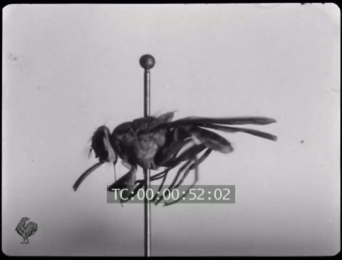

1910 was the year in which the Charles Urban and Percy Smith films The Acrobatic Fly, Flies Feeding and The Fly
Pest were first shown in the US. The Acrobatic Fly was even the subject of a cartoon. Urban also released Microscopical
Curiosities in January, a compilation of the work of F. Martin Duncan 1903-1908, including The Cheese
Mites (1903).
screening of Jean Comandon's films at the King's College Hospital Medical Society from Illustrated London News (5 November 1910)
Pathé's microcinematographic expert Dr. Jean Comandon was also touring his films in France and Britain. A special Pathé brochure was issued
in July 1910 for the new Comandon series « Cinématographie ultramicroscopique ».
Cinématographie ultramicroscopique - vues prises sous la direction scientifique de M. le Docteur J. Comandon avec cet avant-propos :
Le vif intérêt suscité dans le monde scientifique par la Cinématographie des Infiniment Petits est suffisamment notoire pour que nous
nous dispensions d’en faire un plus ample éloge. Les vues de cette catégorie, dont nous disposons à l’heure présente, ainsi que celles
que nous éditerons ultérieurement, intéresseront, à notre avis, non seulement les Facultés et les Écoles Supérieures, mais trouveront
leur place à tous les degrés de l’Enseignement. Il s’en dégage, en effet, une leçon de choses ayant son utilité même pour les profanes
et dont les conséquences d’ordre social peuvent être envisagées dès à présent.
Ultramiscosopic cinematography - views taken under the direction of Dr. Jean Comandon with this preface: The lively interest aroused
in the scientific world by the cinematography of the Infinitely Small is sufficiently notorious for us to dispense with making
a more fulsome eulogy. The views in this category at present available, and which we shall subsequently make available, will,
in our opinion, interest not only the Faculties and the Schools of Higher Education, but will find their place at every level of
the educational system. They provide, in effect, a lesson in things useful even to the layman and of which the consequences of a social
order are now being envisaged.
Dr. Jean Comandon, Diatomées (Pathé, 1910)
The series included old favourites such as Spirocheot pallida (de la syphilis), Spirocheota
gallinarum, Agglutination de spirocheota gallinarum, Spirochetes de Vincent, Mouvement ambiboide d'un leucocyte,
Sang humain and Fièvre recurrente. Others include Microbes contenus dans l'intestin d'un souris, Coeur
d'embryon de truite, Sang d'ovipare, Saprologénée (a fungus causing a disease of aquarium fish known as « mousse »),
Filaria (microfibres in the blood), Circulation du sang, Hemokenes (also known as Poussière de sang),
Action de l'eau sur le sang,Spirogyra (green freshwater algae), Mouvements de protoplasme dans les cellules de characées,
Mouvements de protoplasme dans les cellules d'Elodea canadensis (algae and waterweed), Mouvements de protoplasme dans les
poils staminaix de Tradescantia. Éclosion de kystes d'infusoires ciliés (microscopic creatures found in stagnant water),
Bacilles d'Eberth (salmonella), Anguillula aceti (an eelworm to be found in vinegar), Le Ver de la farine (Tenebrio
Molitor) (mealworm) and Amibes dysentriques (a protozoan inducing gastro-enteritis). Acariens (mites and tocjs),
Les Poux (fleas), Bryzoaires d'eau douce (freshwater parasites) and Diatomées (microscopic brown algae).
Altogether a splendid evening's entertainment no doubt but not a bundle of laughs!
Many of these films, including Filaria, Spirogyra, Saprologénée, Éclosion de kystes d'infusoires ciliés,
Bacilles d'Eberth. Anguillula aceti, Le Ver de la farine (Tenebrio Molitor), Amibes dysnetriques, Acariens,
Les Poux, Bryzoaires d'eau douce, Diatomées and the various films illustrating « mouvements de protoplasme »
all survive in the Gaumont/CNC archives. A series of particularly interesting items that also appear in this collection, in addition to
Trypanosoma Brucei and Trypanosoma Lewisi, which had already been part of Comandon's 1909
repertoire, and which also survive in the archives, were Trypanosoma de la genouille, Mécanisme de la phagocytose
des trypanosomes, phénomène d'accolement and, above all, Trypanosoma gambiense, analysis of the agent of the illness
known as "sleeping sickness", carried by the tsé-tsé fly, an illness at that time rife in Africa. There had been a series of outbreaks
1898-1900, culminating in the worst epidemic of all in Uganda in 1901 that is said to have killed a quarter of a million people (half
the population of the region).
‘Sleeping sickness patients, 1902: all died’. plate of patients at Mengo hospital from Sir Albert Cook, Uganda Memories 1897-1940 (1945)
Sir David Bruce
Comandon had already shown interest in 1909 in diseases that appeared to specifically affect "the negro race". his Fièvre
recurrente, rather than following any vague general use of the term, had concentrated specfically on infections carried by tics,
fleas and other animal pests (brucelloisis or borélliosis), common certainly in Africa in a particularly virulent and life-threatening
form but not in any way restricted solely to that Continent or the peoples inhabiting it as Comandon claimed. His interest in trypanosomes,
another form of disease-carrying parasite which was specific to Africa, was a natural corollary of that work since certain recurrent
fevers had been discovered in the first years of the century to be due to one of the most unpleasant carriers of parasites (trypanosomes),
Joseph Everett Dutton
the tsé-tsé fly. These trypanosomes had first been identified in the previous century as attacking trout and frogs, hence the
importance of Comandon's Coeur d'embryon de truite and another new film in the series Trypanasomes de la grenouille,
films which also survive in the Gaumont/CNC archives.
Scottish pathologist David Bruce (1855-1932), who had as early as 1895, identified trypansomes carried by the tsé-tsé as causing
a feverish, lethargic condition (« nagana ») in cattle (Trypanosoma Brucei), now (1903) established, based on the work
in the field of the surgeon Robert Michael Forde (1861-1948) and parasitologist Joseph Evertt Dutton (1874-1905), that the same
vector and the same (or similar) parasites were responsible for the so-called "sleeping sickness" (also known, amongst many other
names, as « nagana » or, today, as African trypanosomiasis) suffered by humans (Trypanosoma gambiensi). The trypanosomes
injected by the fly pass from the lymph in the blood to the liver and thence to the brain, which, if not treated, nearly always
results in death in about three or four months or in a year or two, depending on the strain. Bruce was knighted in 1908 but both
Forde and Dutton were infected by the disease, the latter dying from its effects. His funeral in Kasongo in 1905 was attended by
over a thousand people, mostly locals whom he had treated during his time there.
1977 photograph of a sufferer from "sleeping sickness"
From a cinematic point of view, the "sleeping sickness" had the great virtue of being both extremely dramatic and deeply mysterious,
the very stuff of all medical "scares" and all pleassantly terrifying tales of horror. For Europeans, the fact that it was only found
in Africa might be the cause not only of horror and concern but also of a certain comfort; they could sleep safely in their beds at
night. For them too the disease, before it was formally recognized as an illness and its causes understood and explained, the lethargic
condition induced had sometimes seemed to be little more than a dramatic exaggeration of the characteristics (idlenes and lethargy)
that European habitually attributed to Africans. There is a description of the illness from as early as 17345 by a British naval surgeon
and slaver, John Atkins (1685-1757), who believed the illness to derive from "a natural weakness" of the African brain:
The Sleepy Distemper (common among the Negroes) gives no other previous Notice, than a want of Appetite 2 or 3 days before; their
sleeps are sound, and Sense and Feeling very little; for pulling, drubbing or whipping will scarce stir up Sense and Power enough
to move; and the Moment you cease beating the smart is forgot, and down they fall again into a state of Insensibility, drivling
constantly from the Mouth as in deep salivation; breathe slowly, but not unequally nor snort. Young people are more subject to it
than the old; and the Judgement generally pronounced is Death, the Prognostik seldom failing. If now and then one of them recovers,
he certainly loses the little Reason he had, and turns Ideot...
John Atkins, Appendix to The Navy Surgeon (1734)
Robinson Elliott, Thomas Masterman Winterbottom
In 1803 another surgeon (but abolitionist) Thomas Masterman Winterbottom (1766-1859) produced a somewhat more measured judgement
although he also noted that the slavers, for whom he had nothing but contempt, regarded symptoms of the disease as indicating a
natural proneness to lethargy. For Winterbottom, who carefully observed the symptoms, it was clearly a disesase.
The Africans are very subject to a species of lethargy which they are much afraid of, as it proves fatal in every instance. The
disposition to sleep is so strong, as scarcely to leave a sufficient respite for the taking of food; even the application of a whip,
a remedy which has been frequently used, is hardly sufficient to keep the poor wretch awake.… the disease, under every mode of treatment,
usually proves fatal within three or four months.
Thomas Winterbottom, An account of the native Africans in the neighbourhood of Sierra Leone (2 vols., 1803)
photographs of fly-catching strategies by the Uganda and Nyasaland Sleeping Sickness Commission 1908-1913 (Wellcome Trust)
A modern description (from Encyclopedia Britannica is less brutal than the slaver's account but hardly any more comforting:
After an incubation period in humans lasting one to two weeks, the trypanosomes are found in significant numbers in the circulating
blood. Next the lymph nodes and spleen are invaded, becoming swollen, soft, and tender. The marked enlargement of the lymph nodes
at the back of the neck (known as Winterbottom’s sign) is a common sign of the disease. Irregular fever and delayed sensation to pain
are also characteristic symptoms at this stage. In the more severe East African (or Rhodesian) form of sleeping sickness, T. brucei
rhodesiense infection, toxemia becomes so profound that the patient dies within months. In the West African (or Gambian) type, T.
brucei gambiense infection, there is a delay of one or more years before the trypanosomes proceed to invade the brain and spinal
cord. The resulting neurological symptoms include severe headache, mental dullness and apathy, a weary shuffling gait, tremors,
spastic or flaccid paralysis, chorea, and a profound sleepiness that develops during a meal or when the patient is standing or
walking. These symptoms are followed by increasing emaciation, coma, and death. The West African form of sleeping sickness usually
causes death in two or three years; in some cases, the patient develops a tolerance to the infection and may continue to live for
many years as a carrier of the parasites.
This is a Wellcome Trust film of 1988:
African Sleeping Sickness (Wellcome Trust, 1988)
Comandon's earliest films (Trypanosome Brucei and Trypanosome Lewisi) had observed the effects of the microebs on
mice and rats while Trypanosome de la grenouille looked at frogs and Mécanisme de la phagocytose des trypanosomes, phénomène
d'accolement was purely concerned with microscopy. Trypanosoma gambiense was, on the face of it, the first of the series
to be clearly concerned with human beings. Peter J. Bloom, who discusses the four-minute film at length in his Conlonial Documentary:
Mythologies of Humanitarianism (2008), describes the film as follows:
Dr. Jean Comandon, Trypanosoma gambiense (Pathé, 1910)
It begins with a medium long shot of an African "patient"...an African man, breathing heavily outisde of a hut...an intertitle
informs us that the man is afflicted with sleeping sickness....A still image of the glossa palpalis species of the tsetse
fly dangles on the end of a needle...The film then cuts to an entomological photo of the fly, affixed by a pin to a white backdrop
with its antennae, sensor, proboscis, and stinger labeled as part of an anatomical demonstration with the aid of a pointer...In
the final and longest segment of th film, the camera moves into the cellular universe of the microscopic sample. At first normal
circular blood cells with lymphocytes appear, but a further magnified view detects the telltale, wormlike strands of the microorganism
that causes Gambian sleeping sickness. The invading organism is identified, like the fly itself, as a series of component parts
with a nucleus, flagellum, and undulating membrane. On contact with the parasites, normal circular-shaped blood cells mutate into
octagon-shaped cells at the microscopic level, recombining in a quilted pattern.
Dr. Jean Comandon, Trypanosoma gambiense (Pathé, 1910
The long-shot of the man with which the film starts was evidently added afterwards. The blood shown under the microscope is,
as in the other « trypanosome » films, not that of a human but is blood from a rat). This fact was empasised when
the film was re-edited in 9.5mm for the Pathé-Baby home-viewer in the 1920s as Trypanosome et maladie de sommeil,
which evidently also included material from other « trypanosome » films. The Pathé-Baby catalogue describes it
as follows:
Dans l'Afrique Centrale, des contrées entières ont été dépeuplées par la maladie du sommeil. Cette maladie est due à un trypanosome,
inoculé par une mouche tsé-tsé. Dans ce film, nous montrons à l'ultramicroscope ce trypanosome et d'autres microbes voisins, s'attaquant
aux animaux.
In Central Africa, entire regions have been depopulated by sleeping sickness. Tis disease is caused by a trypanosome innoculated
ny a tsé-tsé fly. In this film, we shall show this trypansome under the ultramicroscope along with other related microbes.
THe film had not been amongst those produced for Pathé's original 28mm home-projector, the Pathé KOK in 1912, although some of
Comandon's other microcinematographic films had, nor was it among the first films to be produced for the Baby (it is not in the
1923 catalogue). Its later inclusion came almost certainly at a time in the mid-1920s when Pathé was attemting to increase its
educational profile (the « Pathé-Baby educateur » and « Pathé-Baby scolaire » series) and was also working
closely with the Ministry of Agriculture to diffuse such educational films in rural areas.
Dr. Jean Comandon, Trypanosoma Brucei (Pathé, 1909)

[Natural history compilation] (Gaumont, 1920)
This re-edited version is almost certainly the one described by Bloom. He dates it plausibly to 1924 and descrives "an art nouveau
silhouette" as appearing before the film; such illustrated frontiscards were very typical of the Pathé-Baby films of this period.
The image of the "pinned fly" is in fact from the 1909 film Trypanosoma Brucei.
In the interim Gaumont had also produced a series of films on the circulation of blood. In a compilation produced in 1920, the films
are described by the CNC as follows:
Le sang. Les mouvements du coeur de la grenouille. Vues microcinématographiques nous initiant aux mystères de la vie des éléments
du sang. Les spirilles de la poule. Les trypanosomes du sang de rat. Circulation, vaisseaux capillaires, examen microscopique du
sang, globules rouges, leucocytes, parasites du sang. [my emphasis]
The blood. The movements of the heart of the frog. Microcinematographic views initiating us into the mysteries of the life of elements
in the blood. The spirals of the hen. The trypanosomes in the blood of a rat. Circulation, capillary vessels, microscopic
examination of the blood, rd globules, leucoctyes, parasites of the blood. [my emphasis]
Raphaël Blanchard
These films seems to have played a role in what Kirk Arden Hoppe, in Lord of the Fly: Sleeping Sickness Control in British
East Africa 1900-1960 (2003), describes as a “circus” of professional interest in sleeping sickness that followed the discovery
of its cause as well as in the development in France of an "anti-fly" campaign analogous to that already existing in the US that
Charles Urban sought to exploit in his publicity for F. Percy Smith's "fly films". According to Peter Bloom, the French doctor
and naturalist Raphaël Blanchard was a key figure in both respects.
Raphaël Anatole Émile Blanchard (1857-1919) had made something of a name for himself on both fronts. He was the founder of the
Société française d’histoire de la médecine (1902) and a member of the Société de pathologie exotique (1909). He had already been
the moving spirit behind a French sleeping sickness survey expedition to the French Congo in 1903. in 1910, he showed Comandon's
"trypanosome films" at the French Psychiatry Convention in Brussels in 1910 as evidence that the lethargic pathology was an illness
(and therefore treatable) and not, as had often been assumed, endemic to he nature of the colonised African.
In fact, following the identification of the trypanosomes responsible for the disease, all the colonial powers concerned (the British,
the Portuguese and the Belgians as well as the French, dispatched expeditions and commissions to fight the disease (Arden Hoppe's
"circus"). This had no doubt much to do with economic self-interest and the need for fit and active manpower (Bloom talks of the
all-imporant rubber trade). But, while it is easy, and fashionable, to mock the men in pith helmets, like the one pictured below
indulging in a very comfortable European form of lethargy, the fact is that a sounder knowledge of the cause of "sleeping sickness"
did contribute to a better undertstanding of the people who suffered from it and a more sympathetic attitude towards them. The
"circus" (especially the fly-catching, for prevention was more effective than cure) was also crucial in controlling the epidemic
and in saving many hundreds, perhaps thousands, of lives.
photographs of fly-catching strategies by the Uganda and Nyasaland Sleeping Sickness Commission 1908-1913 (Wellcome Trust)
Blanchard had also written extensively on insects and insect-borne infection in a non-African context, Les Moustiques : Histoire
naturelle et médicale (1905) and L’insecte et l’infection : Histoire naturelle et médicale des arthropodes pathogènes
(1909) and would found in 1914 La Ligue sanitaire française contre la mouche et le rat (LSF). The first frame of this film showing
the sick African before his hut (preceded by the "art nouveau silhouette" and followed by the dramatic first intertitle
"Negro suffers from sleeping sickness") did not fundamentally change the rather drily academic nature of the material but was a move
by Comandon towards the more proactive role he would later play both in the "anti-fly" campaign in France in
1917 and then in the anti-tuberculosis campaign in the immediate post-war period.
As for the tsé-tsé, loathesome vector of the disease, it was a suitable addition to the rogues' gallery of nature's monsters that
had begun with F. Martin Duncan's squids and tarantulas back of 1908.
photograph (International Atomic Energy Agency)
Another film in the series, Faites bouillir votre eau, first shown in December that year, is an even more obvious examples
of the shift towards envisagin "the consequences of a social order" of the utltramicroscopic studies as promised in the Pathé brochure.
In addition to the more proactive approach, it stands out as distinctly more accessible to the average person than the other films.
It is also, at over twelve minutes, nearly three times as long. Here there is a clear attempt, as in the case of F. Percy Smith's
The Acrobatic Fly (1908) and The Fly Pest (1909), to move away from the strictly scientific domain into the more
popular "health-scare" market, an area where Comandon would later have a particularly important role to play. The film had also
appeared on the earlier home-view system, the 28mm Pathé KOK and appears in a 1918 US Pathéscope catalogue under the title "Why
Water Should be Boiled":
A most interesting scientific subject, showing the microbes in a drop of stagnant water in motion, the rapid development in a
few days' time including bacilli and infusoria; specimens of typhoid germs and infusoria magnified thousands of times. The boiling
of the water to kill such germs and many other interesting facts regarding water purification.
The original is a particularly long film for the time. What survives is just a three-minute Pathé-Baby version retitled Une
goutte d’eau vue au microscope. The original film apparently had as its concluding intertitle « Faites bouillr votre
eau ou buvez de l'eau minérale » and even showed a bottle of Badoit mineral water against a black background. The second
part of this admonition - which rather smacks of advertising - is lacking in the surviving Pathé-Baby version.
Dr. Jean Comandon, Faites Bouillir votre eau (Pathé, 1910)
In this film, Comandon as following very much in the footsteps of the Charles Urban film-makers. F. Martin Duncan had produced
his famous as early as 1903 but has also produced other films examining the
content of a drop of water while F. Percy Smith's The Fly Pest (1909) had very firmly ventured
into the "health-scare" domain even if this was to some extent a device on the part of producer Charles Urban to ensure that the
film would appear in the US.
A distinctly atypical "scientific" film that is not certainly the work of Comandon himself although it would seem to be associated
with his film Coeur d'embryon de truite which appeared separately, and it reflects a demand that would become increasingly
important for "educative" films to also fulfil a useful social and economic purpose in boosting enterprise and industry - in
effect, very often, to be a species of advertising film. Pisciscultre pratique – la Truite first appeared in August-September
1910 and was significantly the first film to be included in a new catalogue section reserved for "scientific" films - « Scénes
de vulgarisation scientifiques ». The original five-minute film would also seem to have been remade or reworked as the slightly
longer Truite, hôte de nos torrents in August 1913. There is a substantial catalogue description for the 1913 version.
L’élevage de la truite, ce poisson recherché par les gourmets, fait dans certaines régions de nos pays l’objet de toute une
industrie. C’est au milieu d’un prospère établissement d’élevage de ces salmonidés que nous nous transportons aujourd’hui. Là,
bien à l’abri de tous les parasites, de tous les ennemis qui leur font une guerre acharnée, dans des bassins et viviers à eau
courante, nous assistons au développement de ces excellents poissons. Nous assistons donc avec le plus grand intérêt à tous
les travaux minutieux que nécessite l’élevage délicat de ce poisson. Entretenus dans des viviers à eau courante, nous voyons
les poissons reproducteurs être repêchés au moment du frai ; les œufs de femelles extraits de leur corps par simple pression
sont fécondés sous nos yeux par la laitance du mâle extraite par le même procédé. Puis, plein d’admiration et d’étonnement,
nous assistons à l’éclosion même de quelques-uns de ces œufs ; les jeunes alevins s’agitent dans leur frêle coque ;
subitement, elle se déchire et les voilà lancés dans la vie. Puis nous voyons quelques spécimens adultes à 6 mois, un an et 18
mois, âge où nous commençons à les apprécier.
The breeding of trout, a fish much sought after by gourmets,is, in certain regions of France, the object of an entire industry and it is
to the heart of such a prosperous breeding establishment devoted to these fish of the salmon family that shall take yu today. There,
well protected from all parasites, and from all enemies that wage a pitiless war, in the reservoirs of running water, we witness
the development of these excellent fish. We are present with the greatest interest at all the meticulous work necessary in the
delicate breeding of this fish. Maintained in reservoirs of runing water, the reproducing fish can be seen being removed at the
precise moment of fertilisation; the eggs of the females, extracted from their body by simple pressure, are fertilised before our
eyes by the male sperm extracted in the same fashion. Then, to our astonishment and admiration, we eevn see the hatchig of some of
these eggs. The young alevins move around in their shell, then suddenly break through and begin their lives. Then we see some adult
specimens of six months old, one year and eighteen months, the age at which we really begin to appreciate them.
The characteristic French humour of the last line puts me irresistably in mind of one of my favourite comic songs.
La maman des poissons elle a l'oil tout rond
On ne la voit jamais froncer les sourcils
Ses petits l'aiment bien, elle est bien gentille
Et moi je l'aime bien avec du citron
Boby La Pointe, La Maman des poissons (1969)
Pisciscultre pratique – la Truite would be included amongst films produced for the 28mm KOK home-viewer from 1912 onwards
and amongst films produced for the later 9.5mm Pathé-Baby system in the twenties. It survives in a much-abbreviated British Pathéscope
version entitled The Raising of Trout (Élevage de truite in the French version).
Dr. Jean Comandon (?), Pisciscultre pratique – la Truite
Another Comandon films to appear in 1910 was the four-minute Examen de l'estomac par les rayons X (Examination of the Stomach by X Rays) (in October and on 1 December 1911 in the US), made in conjunction
with radiographer Dr. A. Loman.
Ce film marque une grande avancée dans l’obtention de vues scientifiques valables par le moyen du cinématographe. Il consiste
en un certain nombre de vues de l’estomac avant et après que le patient ait avalé une solution bismuthée. L’estomac est en
mouvement au moment de la prise de vue. Ce sujet est d’un intérêt certain et d’une grande valeur scientifique.
This film marks a great advance in obtaining scientific views by means of the cinematograph. It consists in part of views of the
stomach before and after the patients has swallowed a solution of bismuth. The stomach is in motion at the time of the filming.
This subject is of a certain inteerst and of a great scientific value.
The four-minute Comment jouent les muscles dans un athlète, a physiological study in the tradition of the work of Étienne-Jules
Marey, recalling the long association betwen cinematography and physical culture, appeared in December 1910 and was another very
early inclusion under the « Scénes de vulgarisation scientifiques » rubric.
Nous voyons tour à tour en jeu dans cette bande, les muscles du bras : le biceps, qui sert à la flexion du bras ; le deltoïde,
reliant les muscles du bras à l’omoplate ; le triceps, extenseur du bras ; l’ensemble des muscles du dos ; le grand dentelé,
placé en diagonale sur les côtes ; les muscles du cou, du ventre, des épaules… Le travail des muscles, développés par la
culture physique, nous apparaît ici très nettement et nous permet une intéressante étude de la structure superficielle du corps
humain.
We see by turns in this reel, the muscles f the arm, the biceps which serve to flexx he arm,te detoids joining the arms to the
shoulder-blade, the tricops, extension of the arm, the entire musculature of the back, the serratus anterior muscle diagonal to
the ribcage, the neck muscles, the belly, the shoulders...the working of the muscles, developed by physical culture, is shown
very clearly and permits an interesting study of the superficial structure of the body.
Natural History
The Natural Colour Kinematograph Company produced another "flower" film, Choice Bouquets and Barnyard Pets in October.
For Kineto F. Percy Smith made his Birth of a Flower and for Kinemacolor, the two Smiths made The Birth of Spring Flowers
and From Bud to BlossomBirth of a Flower was in fact completed by April 1910 and shown in Britain in November but
its US release was delayed until 9 March 1911 so that that the Kinemacolor film, which was essentially the same (only more costly)
could be released first. These films made sensational use of time-lapse photography and would enjoy a very considerable success
on their release.
A film called Curious Caterpillars, featuring the Cynthia silk moth, Tortoise-shell Cyntheronia, also appeared as an Urban
film in the US on 8 January 1910 and is probably by Smith, perhaps one of many reprints of his The
Story of a Silk Moth (1908). Similarly Familiar Reptiles which appeared in the US on 10 March probably just reprises
an earlier F. Martin Duncan film, Amongst the Reptiles (1906).
The arrival of British bird photographer, Oliver Pike at Pathé in 1909 was as important as the arrival
of Dr. Jean Comandon. Previous to this date, Pathé had produced virtually no natural history films whatsoever. Virtually the only
animals filmed outside zoos, were farmyard animals except where they may have strayed (donkeys, camels, elephants etc) into travel
films. Pathé was in exactly the same position, that is to say, as Charles Urban had been wih regard to natural
history films in 1903. At that time Pathé had paid little attention to Urban but the situation had changed, first with Urban's
establishment of a French subsidiary in 1906 (Éclipse), then his association with travel expeditions and hunting films (in parallel
with the activities of the Danish company Nordisk) and the evidence, despite the MPPC, of his increasing success in the US market
(1907-1910), on which he was clearly intent on capitalising with his new companies, The Natural Colour Kinematograph and Kineto, had
all made Urban an important rival/nuisance in the eyes of Pathé. The eye of Sauron had finally fallen upon the Shire and the hiring
in 1909 of Pike, following that of Camondon, was an important part of Pathé's response.
Oliver G. Pike, Les Hôtes de l'air (Pathé, 1910)
Pike, who had begun to work for Pathé in 1909, produced just two more films for Pathé in 1910. One was
Les Hôtes de l'air (Sea Birds in Their Haunts), a seven-minute film largely in colour. shot in the Farne Islands and
in the Orkney and Shetland Isles. It first appeared in April-May 1910 and was shown in the US on 20 January 1911. The Moving Picure
World description is fuller than that in the Pathé catalogue:
Amongst the scenes shown, which are all taken at close quarters, is a colony of Guillemots packed so tightly that returning birds
have to alight on the backs of their companions. Lesser Black Backed Gulls, Gannets, to obtain which the photographer descended
80 feet down a rope and dangles over a sheer precipice having a drop of 300 feet. Puffins, Kittiwakes, Wild Raves, Richardson's
Suka. Buzzard feeding its young, to take which the photographer waited for three days in a crouching position. Young Kestrels
and a Reed Warbler feeding a young Cuckoo.
A copy of this film (curiously retitled Glimpses of Bird Life) is held by the BFI but, as is commonly the case with such
institutions in Britain, they are inclined to forget that they are merely custodians of these films on behalf of the public, and
so it is not unfortunately publicly available as it should be. Other Pathé films made by Pike held by the BFI are equally only available
in brief excerpts, a short-sighted restrictive practice that does nothing to promote the reputation of an important English film-maker.
Les Oiseaux dans leurs nids (Birds in their Nests), was shown in the US as part of split-reel with a comedy on 6 July
1911 butI have only the French catalogue-description. It ilustrates well an aspect that Pike would continue to develop in his later
Pathé films - the emphasis on the intimate family life of the birds filmed, which had implications too for the particular form of
"voyeuristic", and technically complicated, cinematography required to capture such private moments in the subjects' lives. This
film too, just short of seven minutes, was in colour.
Pris sur le vif, dans leur vie intime, les différentes espèces d’oiseaux photographiés dans ce film, forment des groupes
d’un effet artistique et charmant. Loin des villes et de l’homme, les oiseaux des marais vivent en paisibles républiques.
Le Pétrel aventureux niche dans les anfractuosités inaccessibles de la falaise. Le cygne sauvage construit pour sa progéniture
un nid qui est à la fois un radeau et un berceau. Le grèbe huppé se livre à sa pêche quotidienne et les petits faisandeaux,
guidés par leurs parents, vont à la promenade, becquetant par ci, par là. La fauvette traîne-buisson choisit pour établir sa
couvée la branche pendante d’un vieux pin et si un jeune imprudent tombé du nid, ne peut y remonter, elle vient, comme à ses
frères, lui donner la becquée. Le pinson se fait un nid coquet dans les ronces ; la mère grive se dresse en sentinelle vigilante
au-dessus de sa couvée, tandis que, bien à l’abri derrière une clôture de roseaux, les petits affamés du merle accueillent joyeusement
le retour de leur mère. N’importe où au bord de la rivière c’est le nid de la gracieuse bergeronnette lavandière.
Filmed live, in their rivate life, the different species of birds photographed in this film, form groups to a charming and artistic
effect. Far from the towns and from man, the birds of the marshes live in their own peaceful world. The adventruous petrel nests
in the inaccessible cracks in the cliffs. The wild swan builds for her young a nest which serves at once as a raft and a cradle.
The crested grebe goes off on his daily fishing expedition and the baby pheasants, guided by their parents, go for a walk, pecking
here and there. The yellow-rumped warbler chooses for her nest the hanging branch of an old pine and if a careless youngster should
fall from the nest and can not climb back, she comes down to give him his beakful just as she does with his siblings. The finch
makes itself a pretty nest in the brambles. The mother grebe stands guard over her nest, while, well protected behind a wall of
reeds, the hungry little brood of the blackbird greet joyfully the return of their mother. Everywhere beside the river one finds
the nest of the gracious white wagtail.
The film survives after a fashion (although, alas, not in colour, as part of an unusually eleborate two-part version for the
9.5mm Pathé-Baby home-view system under the titie Les Oiseaux et leurs nids. It is, rare amongst Pathé-Baby versions,
pretty much the length of Pike's original film. But it does not match the description very well and, as part of the collection
put together for schools (« Pathé-Baby Scolaire »), is almost certainly a edited compilation of footage from different
sources, including Pike's film but, by the looks of it, also including footage shot by Livier, another Pathé bird specialist
who was filming in Africa 1917-1919. The two parts are respectively « Oiseaux familiers » (largely the work of Pike)
and « Oiseaux sauvagess » (which may include footage by others).
It seems almost certain that Pike was also involved in the making of a 1910 Pathé film on St. Kilda
- he is known to have made a second visit there that year - and he evidently returned to film in the Scottish mountains for Pathé
once again in 1914.
Dr. Jean Comandon and Raymonnd L. Ditmars (?), L'Axolotl (Pathé, 1910)
Apart from the bird films of Pike, Pathé made little else in the way of natural history films in 1910. The five-minute One film,
L'Axolotl (The Axolotl (in September and 15 February 1911, a study of the Mexican salamander, is sometimes credited
to Comandon but this seems unlikely. It bears no resemblance to his other films. He was responsible for the film no doubt as the
head of the Pathé « service scientfique » but the film is much more likely to be the work of US herpetologist and zoo-keeper
Raymond L. Ditmars who was certainly working for Pathé by 1911. Although Ditmars would come
to France in 1911 to shoot a "marine series" at the Musée océanograhpique in Monaco, this films was more probably made in the US,
a presumption increased by the fact that it appeared there on a split-reel with a western, an "American Kinema" film produced
by Pathé's US susbsidiary. Not much "axolotl" appears to be visible in this particular still.
James Williamson, History of a Butterfly: A Romance of the Insect World (1910)
Another factor encouraging the making of such films and which added significantly to their popularity were improved camera techniques.
The work of microcinematography begun by F. Martin Duncan in 1903 had been continued by Dr. Jean
Comandon at Pathé from 1908-1909. In France too the work of developing effective slow-motion and rapid-motion cinematography
formed the basis of the work of Lucien Bull at the Institut Marey and of Comandon's colleague in
the Pathé « service scientfique », Émile Labrély. In 1908 British film-maker James Williamson
had availed himself of the services of expert microscopist E.J. Spitta for the film Nature's Hidden Beauties: Pond Life.
In 1910 Williamson produced another nature film, History of a Butterfly: A Romance of the Insect World, a film where
Caterpillars are seen hatching, feeding and ready for pupation and where three caterpillars are shown changing into chrysales
and finally the birth of a peacock butterfly. The film contains an early use of time-lapse photography to show the caterpillars
emerging from theiir pupae, the technique that F. Percy Smith would use so effectively this same year for his Birth of a Flower.
The Williamson films survive in the BFI archivs but have unfortunately not been made fully publicly avaiiable as they should
have been and are not therefore as well known as they should be. Other later films on the same subject showed, alas, less skill
and resourcefulness. This film would appear to be Birth of a Butterfly made by the US company Selig in 1913.

Sir David Bruce
Joseph Everett Duttonthe tsé-tsé fly. These trypanosomes had first been identified in the previous century as attacking trout and frogs, hence the importance of Comandon's Coeur d'embryon de truite and another new film in the series Trypanasomes de la grenouille, films which also survive in the Gaumont/CNC archives.Dr. Jean Comandon, Trypanosoma gambiense (Pathé, 1910)